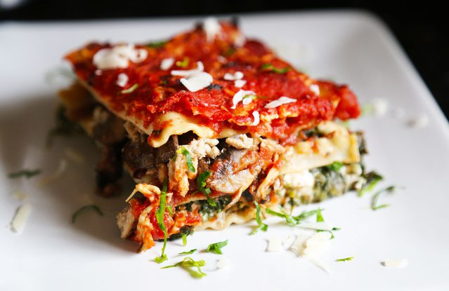

Lean Lasagna

Our favorite recipe from the Cooking Light column, this lightened-up lasagna tastes every bit as flavorful as the traditional version.
How to make it
- Cook ground turkey in skillet over medium heat, stirring often, 8 minutes or until brown; drain well on paper towels. Stir together turkey,
tomato puree, and next 10 ingredients in a large saucepan; cover and cook over low heat, stirring occasionally, 30 minutes. Discard bay leaf.
- Preheat oven to 350°. Stir together cottage cheese, spinach, and Parmesan.
- Coat a 13- x 9-inch baking dish with cooking spray. Spread 1 cup turkey mixture into baking dish. Top with 6 wonton wrappers in a single layer (slightly overlapping),
1 cup spinach mixture, and 1 1/2 cups turkey mixture. Repeat layers twice, beginning with wontons and ending with turkey mixture.
- Bake at 350° for 40 minutes or until thoroughly heated. Remove from oven. Top with mozzarella cheese, and bake 5 minutes more.
Ingredients
- 1/2 pound ground turkey
- 1 (14.5-oz.) can tomato puree
- 3 (8-oz.) cans no-salt-added tomato sauce
- 1/3 cup chopped green pepper
- 1/3 cup chopped yellow onion
- 1 garlic clove, crushed
- 1 bay leaf
- 1 1/4 teaspoons Italian seasoning
- 1/2 teaspoon dried oregano
- 1/4 teaspoon fennel seeds
- 1/8 teaspoon ground red pepper
- Dash of ground nutmeg
- 1 (12-oz.) container 2% reduced-fat cottage cheese
- 1 (10-oz.) package frozen chopped spinach, thawed and pressed dry
- 2 tablespoons grated Parmesan cheese
- Vegetable cooking spray
- 18 wonton wrappers
- 1 cup (4 oz.) shredded part-skim mozzarella cheese
Hands on time
1Hour
Total time
1 Hour &45 minutes
Servings
for 8 people